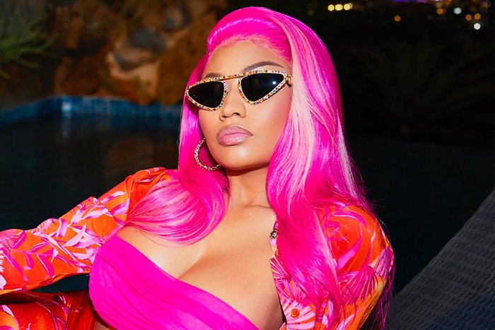

20 de novembro de 2020
A série documental de Nicki Minaj na HBO Max sem título consistirá em seis episódios de meia hora que exploram a jornada pessoal e profissional de Nicki, enquanto fornecem acesso sem precedentes à sua vida.
De acordo com um comunicado à imprensa, Minaj irá “guiar os espectadores pelos momentos mais desafiadores e gratificantes de sua vida, navegando por altos, baixos e agendas mal orientadas em sua estratosférica ascensão à fama e sua jornada para a maternidade”.
Nicki voltou às redes sociais para fazer o anúncio na sexta-feira. “Isso vai dar a vocês uma visão crua e sem filtros da minha vida pessoal e da minha jornada profissional, mal posso esperar para compartilhar isso com vocês”, disse Nicki.
A série é produzida por BRON Life e dirigida por Michael John Warren, que dirigiu Fade to Black de JAY-Z e os documentários anteriores de Minaj para a MTV.